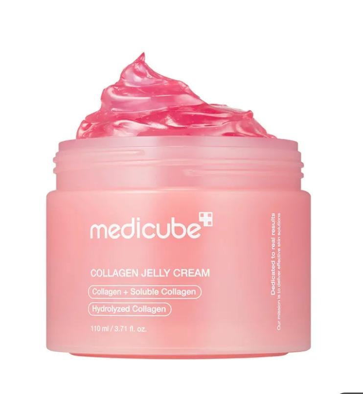

Medicube PDRN Pink Peptide Eye Cream
Crema de ojos con PDRN y Niacinamida al 5%. Reduce líneas finas, ilumina ojeras y disminuye la hinchazón.
15.99 €
12.50 €
Descubre el secreto de la belleza coreana. Inspirado en la calma de los cerezos en flor y la calidez de la madera.
Ver Colección
Crema de ojos con PDRN y Niacinamida al 5%. Reduce líneas finas, ilumina ojeras y disminuye la hinchazón.

Sérum de ojos con Ginseng y Retinal. Mejora las arrugas en pieles sensibles mientras las nutre profundamente.

Crema en gel con colágeno y niacinamida. Redefine contornos y aporta el famoso acabado "Korean Glass Glow".

Crema iluminadora con 99% de ácido tranexámico. Trata manchas, cicatrices y unifica el tono de la piel.

Sérum con 63% de agua de espino amarillo y 8 tipos de ácido hialurónico. Revitaliza, unifica y calma la piel.
Descripción: Crema para ojos innovadora que combina ingredientes poderosos para reducir las líneas finas, las ojeras y la hinchazón. Con textura ligera y no pegajosa, se absorbe rápidamente proporcionando hidratación intensa a la piel sensible.
Ingredientes: Water, Glycerin, Dipropylene Glycol, Niacinamide, Caprylic/Capric Triglyceride, Pentaerythrityl Tetraethylhexanoate, Cetearyl Alcohol, Glycereth-26, Butylene Glycol Dicaprylate/Dicaprate, Bis-Behenyl/Isostearyl/Phytosteryl Dimer Dilinoleyl Dimer Dilinoleate, Cetearyl Olivate, Sorbitan Olivate, Propylene Glycol Dibenzoate, Pullulan, 1,2-Hexanediol, Glyceryl Stearate, Vinyl Dimethicone, Hydroxyacetophenone, Hydroxyethyl Acrylate/Sodium Acryloyldimethyl Taurate Copolymer, Hydrogenated Lecithin, Sodium Acrylate/Sodium Acryloyldimethyl Taurate Copolymer, Sodium DNA, Polyisobutene, Butylene Glycol, Ethylhexylglycerin, Propanediol, Melia Azadirachta Leaf Extract, Adenosine, Melia Azadirachta Flower Extract, Curcuma Longa (Turmeric) Root Extract, Sorbitan Isostearate, Sorbitan Oleate, Caprylyl/Capryl Glucoside, Fragaria Chiloensis (Strawberry) Fruit Extract, Hedera Helix (Ivy) Leaf/Stem Extract, Cyanocobalamin, Citrus Nobilis (Mandarin Orange) Peel Extract, Retinol, Ocimum Sanctum Leaf Extract, Lespedeza Capitata Leaf/Stem Extract, Corallina Officinalis Extract, Sodium Hyaluronate, Caffeine, Coffea Arabica (Coffee) Seed Extract, Hydrolyzed Extensin, Hydrolyzed Hyaluronic Acid, Copper Tripeptide-1, Sodium Acetylated Hyaluronate, Acetyl Hexapeptide-8, Palmitoyl Pentapeptide-4, Palmitoyl Tetrapeptide-7, Palmitoyl Tripeptide-1.
Descripción: Un sérum para el contorno de los ojos que, al combinar extracto de ginseng y retinal, ayuda a mejorar el aspecto de las arrugas que aparecen en esta zona en pieles sensibles.
Ingredientes: Aqua, Panax Ginseng Root Extract, Glycerin, Dipropylene Glycol, Caprylic/Capric Triglyceride, 1,2-Hexanediol, Butylene Glycol Dicaprylate/Dicaprate, Niacinamide, Pentaerythrityl Tetraethylhexanoate, Cetearyl Alcohol, Cetearyl Olivate, Sorbitan Olivate, Butylene Glycol, Hydrogenated Lecithin, Carbomer, Glyceryl Stearate, Tromethamine, Macadamia Ternifolia Seed Oil, Ethylhexylglycerin, Adenosine, Cholesterol, Dextrin, Polyglyceryl-10 Oleate, Theobroma Cacao (Cocoa) Extract, Disodium EDTA, Brassica Campestris (Rapeseed) Sterols, Phytosteryl/Behenyl/Octyldodecyl Lauroyl Glutamate, Retinal, Silica, Aluminum/Magnesium Hydroxide Stearate, Sodium Hyaluronate, Tocopherol, Ceramide NP, Potassium Cetyl Phosphate, Pentaerythrityl Tetra-Di-T-Butyl Hydroxyhydrocinnamate, Palmitoyl Tripeptide-5.
Descripción: Crema hidratante innovadora y adaptable. Formulada para tratar el tono desigual, manchas y cicatrices de acné. Contiene 99% de ácido tranexámico y 5% de niacinamida. Los ingredientes activos encapsulados se liberan al aplicarse. Contiene ceramidas y ácido hialurónico.
Ingredientes: Water, Glycerin, Niacinamide (50,000 Ppm), Methylpropanediol, Propanediol, 1,2-hex-Anediol, Dipropylene Glycol, Caprylic/capric Triglyceride, Glyceryl Glucoside, Butylene Glycol, Arginine, Ethylhexyl Palmitate, Carbomer, Cetearyl Alcohol, Cetearyl Olivate, Sor-Bitan Olivate, C12-14 Alketh-12, Ammonium Acryloyldimethyltaurate/vp Copolymer, Simethicone, Ethylhexylglycerin, Melia Azadirachta Flower Extract, Melia Azadirachta Leaf Extract, Adenosine, Polyacrylate-13, Disodium Edta, Cyanocobalamin, Triethyl Ci-Trate, Betaine, Polyisobutene, Glyceryl Stearate, Hydrolyzed Sclerotium Gum, Tranexamic Acid, Abelmoschus Esculentus (Okra) Fruit Extract, Panthenol, Coccinia Indica Fruit Extract, Corallina Officinalis Extract, Polysorbate 20, Sorbitan Isostearate, Glutathione, Fragaria Vesca (Strawberry) Fruit Extract, Castanea Crenata (Chestnut) Shell Extract, Citrus Junos Peel Extract, Betula Platyphylla Japonica Bark/leaf Extract, Ricinus Communis (Castor) Seed Oil, Bisabolol, Ferulic Acid, Cymbopogon Citratus Leaf Oil, Illici-Um Verum (Anise) Fruit/seed Oil, Octyldodecanol, Hydrolyzed Hyaluronic Acid, 3-0-ethyl Ascorbic Acid, Sodium Hyaluronate, Alpha-arbutin, Hydrogenated Lecithin, Ceramide Np, Hydroxypropyltrimonium Hyaluronate, Caprylyl Glycol, Sodium Acetylated Hyaluronate, Hyaluronic Acid, Sodium Hyaluronate Crosspolymer, Hydrolyzed Sodium Hyaluronate, Potassium Hyaluronate.
Descripción: Sérum facial iluminador que revitaliza la piel desde adentro. Enriquecido con Agua de Hippophae Rhamnoides (63%) y Ácido Tranexámico. Más suave que los sueros tradicionales de vitamina C, ideal para pieles sensibles. Contiene 8 tipos de ácido hialurónico y agua de Centella Asiatica para calmar.
Ingredientes: Hippophae Rhamnoides Water, Centella Asiatica Leaf Water, Niacinamide, Butylene Glycol, 1,2-Hexanediol, Dipropylene Glycol, Water(Aqua), Methyl Gluceth-20, Methylpropanediol, Betaine, Tranexamic Acid, Glycerin, Pentylene Glycol, Propanediol, Hydroxy ethyl Urea, Laminaria Japonica Extract, Eclipta Prostrata Leaf Extract, Ficus Carica (Fig) Fruit Extract, Centella Asiatica Extract, Hydrogenated Lecithin, Sodium Hyaluronate, Carbomer, 3-0-Ethyl Ascorbic Acid, C12-14 Pareth-12, Ammonium Acryloyldimethyltaurate/VP Copolymer, Xanthan Gum, Tromethamine, Panthenol, Ethylhexylglycerin, Adenosine, Disodium EDTA, Fructooligosaccharides, Beta-Glucan, Ascorbic Acid, Hydrolyzed Hyaluronic Acid, Ceramide NP, Alpha-Arbutin, Tocopherol, Bifida Ferment Lysate, Bisabolol, Ubiquinone, Hydroxydecyl Ubiquinone, Sodium Acetylated Hyaluronate.